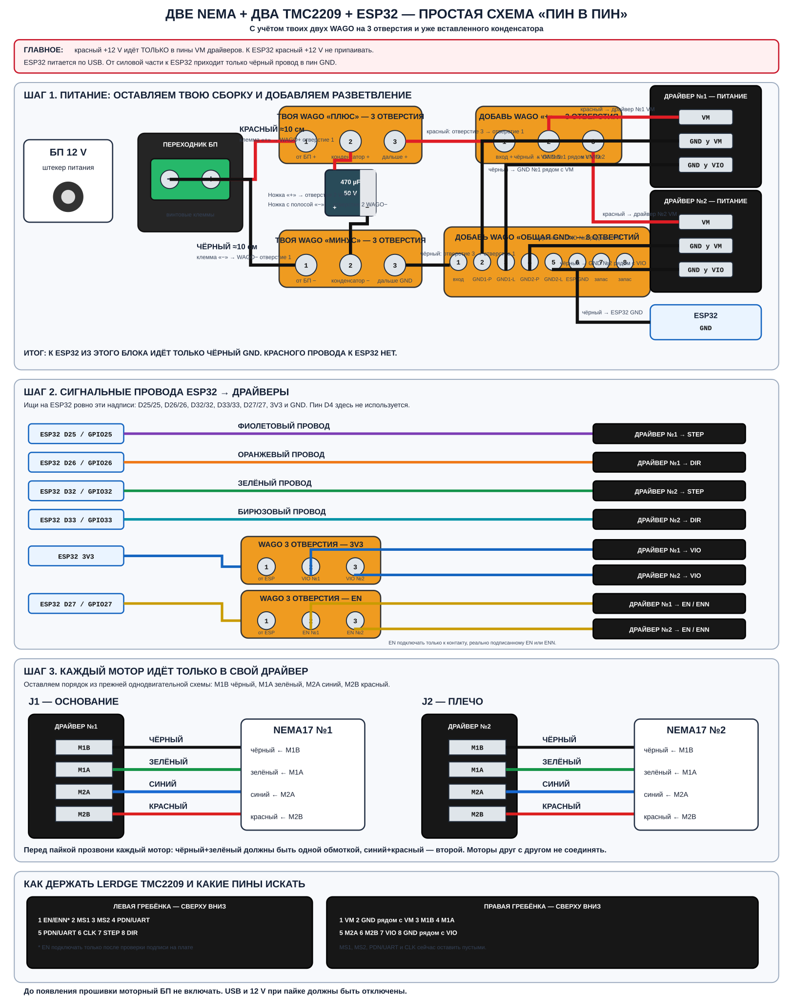

Две NEMA17 + два LERDGE TMC2209 + ESP32
Максимально простая схема под твою уже собранную пару трёхконтактных WAGO с конденсатором.
Сразу отвечаю, куда идут оставшиеся красный и чёрный провода
Оставшийся красный из твоей WAGO не идёт в ESP32. Он идёт в новую трёхконтактную WAGO. Из неё выходят два красных провода: один в VM драйвера №1, второй в VM драйвера №2.
Оставшийся чёрный из твоей WAGO идёт в новую общую WAGO на восемь контактов. Из неё выходят отдельные чёрные провода в GND ESP32 и в оба контакта GND каждого драйвера.
ESP32 питается только по USB. Подавать 12 В на ESP32 нельзя.
Главная схема

Нажми на изображение: SVG откроется отдельно и его можно увеличивать без потери чёткости.
Что нужно добавить к уже собранным двум WAGO
- 1× WAGO на 3 отверстия — разветвление красного
+12 Vна два контактаVM. - 1× WAGO или распределитель на 8 отверстий — общая земля для двух драйверов и ESP32.
- 1× WAGO на 3 отверстия — разветвление
3V3на два контактаVIO. - 1× WAGO на 3 отверстия — разветвление
D27на два контактаEN/ENN. Её подключаем только после проверки подписи EN на плате.
В одно отверстие WAGO вставляется только один провод. Два провода в одно отверстие не запихивать.
Шаг 1. Твои существующие WAGO и конденсатор
WAGO «плюс» на 3 отверстия
- Отверстие 1: красный провод длиной около 10 см от клеммы
+переходника БП. - Отверстие 2: положительная ножка конденсатора. Это ножка без минусовой полосы.
- Отверстие 3: новый красный провод к отверстию 1 дополнительной WAGO «плюс».
WAGO «минус» на 3 отверстия
- Отверстие 1: чёрный провод длиной около 10 см от клеммы
−переходника БП. - Отверстие 2: отрицательная ножка конденсатора. На этой стороне корпуса нарисована полоса с минусами.
- Отверстие 3: новый чёрный провод к отверстию 1 дополнительной WAGO «общая GND».
Шаг 2. Распределяем питание на два драйвера
Новая красная WAGO на 3 отверстия
| Отверстие | Что вставить | Другой конец провода |
|---|---|---|
| 1 | красный входящий провод | отверстие 3 твоей существующей WAGO «плюс» |
| 2 | красный провод | VM драйвера №1 — J1 основание |
| 3 | красный провод | VM драйвера №2 — J2 плечо |
Новая чёрная WAGO на 8 отверстий
| Отверстие | Куда идёт чёрный провод |
|---|---|
| 1 | вход от отверстия 3 твоей существующей WAGO «минус» |
| 2 | драйвер №1 → GND, расположенный рядом с VM |
| 3 | драйвер №1 → нижний GND, расположенный рядом с VIO |
| 4 | драйвер №2 → GND, расположенный рядом с VM |
| 5 | драйвер №2 → нижний GND, расположенный рядом с VIO |
| 6 | любой пин GND на ESP32 |
| 7–8 | оставить свободными |
Шаг 3. Сигнальные провода ESP32 → драйверы
На ESP32 подпись может выглядеть как D25 или просто 25. Это тот же GPIO25. Пин D4 в этой схеме не используется.
| Первый конец | Второй конец | Цвет на схеме |
|---|---|---|
ESP32 D25 / GPIO25 | драйвер №1 STEP | фиолетовый |
ESP32 D26 / GPIO26 | драйвер №1 DIR | оранжевый |
ESP32 D32 / GPIO32 | драйвер №2 STEP | зелёный |
ESP32 D33 / GPIO33 | драйвер №2 DIR | бирюзовый |
Разветвление 3V3
- ESP32
3V3→ отверстие 1 маленькой WAGO «3V3». - Отверстие 2 → драйвер №1
VIO. - Отверстие 3 → драйвер №2
VIO.
Разветвление EN
- ESP32
D27 / GPIO27→ отверстие 1 маленькой WAGO «EN». - Отверстие 2 → драйвер №1
EN/ENN. - Отверстие 3 → драйвер №2
EN/ENN.
GPIO27 подключать только к контакту, который на реальной плате действительно подписан EN или ENN. Если подписи нет — эти три провода пока не паять.
Шаг 4. Моторные провода
Оба мотора подключаются одинаково, но каждый только к своему драйверу:
| Пин драйвера | Провод NEMA17 №1 | Провод NEMA17 №2 |
|---|---|---|
M1B | чёрный | чёрный |
M1A | зелёный | зелёный |
M2A | синий | синий |
M2B | красный | красный |
Перед пайкой прозвони каждый мотор отдельно. Чёрный и зелёный должны образовывать одну обмотку, синий и красный — вторую. Цвета не являются универсальным стандартом, поэтому прозвонка обязательна.
Порядок контактов LERDGE TMC2209 сверху вниз
Левая гребёнка
EN/ENN— только если подписанMS1— пустоMS2— пустоPDN/UART— пустоPDN/UART— пустоCLK— пустоSTEPDIR
Правая гребёнка
VM— красный +12 VGNDрядом с VMM1BM1AM2AM2BVIO— 3V3 от ESP32GNDрядом с VIO
Порядок взят из предыдущей схемы твоего проекта. Перед пайкой всё равно прочитай надписи непосредственно на каждой плате: маркировка реальной платы важнее рисунка.
Пока ничего не включать
- При пайке отключены и USB, и моторный БП.
- До прошивки моторный БП 12 В не включаем.
- Моторные разъёмы нельзя подключать или отключать при включённом 12 В.
- После сборки сначала прозвоним питание, потом я подготовлю тестовую прошивку и будем запускать по одному двигателю на малой скорости.